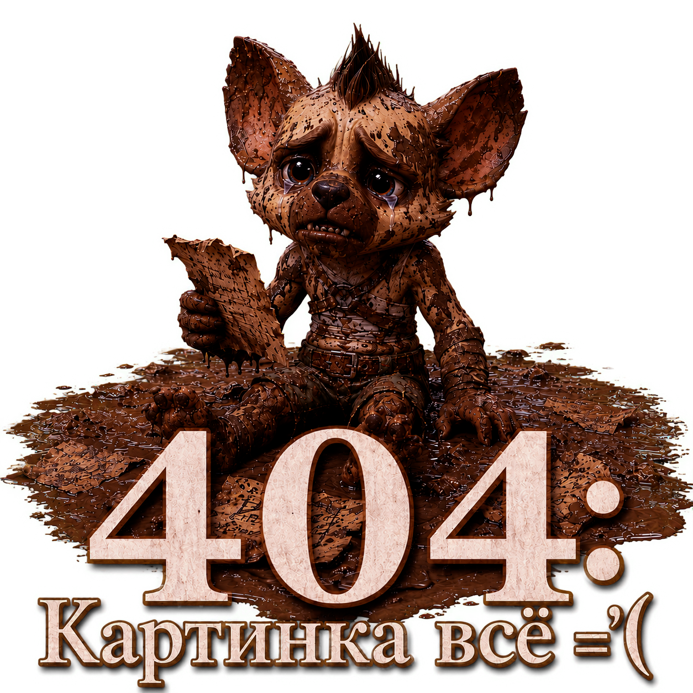

Да, я сам удивился: откуда взяться царькам на официальных серверах, где у них в принципе не может быть никакой власти? Но им удалось!
Муссия Ролевого Сообщества
Всплыл на официальном форуме такой вот маняфест:

Просто классика жанра. Элитный заморский барин, аж с самого Argent Dawn и Moonglade, снизошел до убогих рачков-срулевичков и согласился нами княжить! Построиться, холопы, и на царские угодья шагом марш!Внутри сообщества я недавно, но перед тем, как такое затевать, я успел познакомиться со многими из вас. Я пришел после игры на Moonglade и Argent Dawn, после общения с десятками разных игроков, на русский офф и понял, что сообщество достаточно большое для комфортной и хорошей игры в разных стилях.
Кто я такой, чтобы на себя так много брать? Я ролевик с большим стажем, с большой фантазией, большим количеством свободного времени, большим каналом в дискорде.Как только заходишь на новый район - сразу надо трясти призрачными регалиями, а то еще подумают, что ты лох какой-то, а не барин. Вот только один из моих агентов не зря заметил: с таких старых серверов обычно уходят только после порции ссаных тряпок. И я подозреваю, Мусс именно их и получил.
Я могу объединить людей для игры на сторонних ресурсах для того, чтобы вы искали игроков вне игры и играли вместе КРОСС-СЕРВЕРНО
И я хочу, чтобы мы начали играть, и готов отдать много сил, чтобы начать восстанавливать ролевое сообщество.
В комментариях я выслушаю ваши вопросы, отвечу на них и помогу разобраться в том, почему МЫ МОЖЕМ ВОЗРОДИТЬ РП, и как мы это сделаем.
Сколько уже таких поднимателей с колен с наполеоновскими планами было? Исчисляются точно десятками.
Объединяет их одно - обосранные штаны. Ведь одно дело - громко кукарекать и лупить себя пяткой в грудь
на форуме и в чатиках, а другое - организовывать игру для толпы гыгыкающих клоунов, которым лишь бы в
таверне повиртить.
Что мы должны сделать для восстановления игры и стирания старых обид? Зарубить нездоровую конкуренцию на корню.Что случается, когда на сервере нет конкуренции ролевых гильдий, наглядно видно по Петушиному Позору.
Представьте, что дискорд канал и наше сообщество - старенький РП сервер Moonglade. На нем есть ролевики одного стиля, и другого, они могут не любить друг друга, могут абсолютно не общаться и не пересекаться. Точно также происходит на каждом EU RP сервере.Чуете, чем пахнет? Кажется, кто-то кинул обидку на злых европейских ролевиков, не оценивших по достоинству гений Мусса, и теперь решил создать свой уютный маня-уголок, где все друг другу улыбаются и слова поперек сказать не могут.
Теперь, вместо того, чтобы каждого нового ролевика завоевывать некрасивой конкуренцией, нарушая всякую этику, мы позволим каждому новоиспеченному ролевику выбирать себе игровой стиль и правила для игры.
Поперек слова барина.
Я ведь не просто так эти цитатки сюда скидываю. Просто наберите в грудь воздуха побольше и готовьтесь, задние ряды.
Ну и напоследок, прежде, чем перейдем к делу:
Помимо этого, лично я организую гильдию уровня Воронов на Гордунни, и возможно найдутся Хардкорные Ролевики, которые скоро смогут поучаствовать с легендарными в совместных ивентах.
я организую гильдию уровня Воронов на Гордунни
Хардкорные Ролевики
поучаствовать с легендарными
Думаю, вы уже догадались, что вышло из этой маня-утопической затеи с обещаниями ролевого коммунизма и
всеобщей уравниловки? Да, очередной Кибергулаг им. Мусса, где ты либо беспрекословно следуешь линии
партии, либо тебя репрессируют за мыслепреступления против воли Барина.
Пост датируется 11-м ноября, но обратил я на него внимание теперь, ведь правда вскрылась только
сейчас. До этого мне казалось, что не найдется дурачков, которые поведутся на очередные грандиозные
речи, но их, в итоге, оказалось под сотню. И, конечно же, царек Мусс вскоре показал себя во всей
красе.
Краткая предыстория со слов нашего агента: была да сплыла на Вечной Песне гильдия "Горная Пехота",
которую уличили в плагиате, и в дискордопомойке Мусса в канале "Флуд" пошло бурное обсуждение с
критикой. И тут вошел Царь и объявил, что в его владениях никого критиковать нельзя, все должны сидеть
молча и с блаженным видом нахваливать любого бомжа, и вообще, у них тут атмосфера магии дружбы. В
ответ ему намекнули, что он ебу дал. Царь церемониться не стал и просто запретил все подобные
обсуждения, неугодных побанил, а чат канала снес, чтобы неповадно было. И убежал делать маня-свод
правил общения в дискордопомойке. Подобный ход царем понравился не многим, и вот, что из этого вышло:
(наш шпион перестарался и вырезал вообще все имена, даже Мусса, так что восстановил структуру диалога
я на глазок)
Вот такой вот Мессия всея Ролевого Сообщества. Советы опытных людей ему не нужны - Барин лучше знает,
и вообще, ишь че удумали, в слове царском сомневаться!
Особо позабавило барская маня-классификация ролевиков на "преподавателей" и "студентов". Ловко он всех
разделил! Учись, студент, ролевой этике у преподавателя, даже не так, мастера Мусса. Под
"ролевой этикой", видимо, понимаются репрессии всех несогласных и затыкание ртов, посмевших озвучить
мнение, не сочетающиеся с манямирком Царя.
Очевидно, что "преподаватели" в этой классификации - сам Барин и его подсосы, а все остальные так, на
птичьих правах, и не должны отвлекать мастеров от великих дум, а коль что смерду понадобилось - пусть
ползет с челобитной на коленях.
Писать можно только то, что одобрено Царской Полицией Мысли и по строго
определенному Барином регламенту: скобочек должно быть строго по ГОСТу. Вопросы
задавать нельзя - это дискриминация. Обсуждать отыгрыш нельзя - это
гильдизм и серверизм. И дискриминация с навязыванием мнения, отличного от барского. А вот банить
несогласных можно. Ведь обсуждать что-то - это
вам надо, а Царю - нет. Царю главное счетчик сидящих в дискордопомойке
держать, ведь циферки - то, ради чего ролевая игра и затевалась.
Ну и, конечно, самое страшное преступление - сказать то, от чего Он Самый оскорбится. И эфемерные
угнетенные игроки, которые так и пишут, так и пишут Царю, вопрошая: будут ли их мерзкие ролевички
угнетать своим обсуждением?
Ведь все это создаст здоровое сообщество без смехуечков и троллинга. И без несогласных с линией
партии. Зато Барин свое ЧСВ потешит: вон, сколько народу собрал! С колен ролевую игру поднял!
Вот только что он сделал-то, в итоге? Ну, согнал всех в одну конференцию, это мы и раньше видели. А дальше что?
За такие вопросы на Муссовском районе банят.
Вот только что он сделал-то, в итоге? Ну, согнал всех в одну конференцию, это мы и раньше видели. А дальше что?
За такие вопросы на Муссовском районе банят.
В теме на форуме тоже карнавал:
Его подсосы хоть бы постарались шифроваться. Самоподдув ни разу не заметен.
В каждой бочке затычка Леррден тоже в наличии. Видимо, решил, что раз нынче у него на Вечной Песне монополия на сточную канаву для типа-ролевиков, то может говорить от лица всего сообщества.
Наконец, среди тотального флюродроса, прорезался голос разума. И тут же оказался залит слюной оголтелых подсосов Мусса. Но больше всего меня заинтересовала вот эта фраза:
И не совсем приятно, оттого что не совсем понятно - пришел стример LoL'a накручивает на свой дискорд и твич канал траффик. Планирует создавать контент для YouTube и собственно, вопрос - а где ролевая игра?
Давайте-ка проверим!


Это многое объясняет. Например, царско-хамский стиль общения и популизм в каждой строчке.
Но свита уже начинает дезертировать. Помните второго оратора, вещавшего о великой мудрости Мусса? Наберите в грудь воздуха! Побольше наберите!
Готовы?
На следующей же странице он покаялся, за что на месте был разжалован из ролевиков:
Изгнанному ссаными тряпками с Ноблгардена пираточному царьку, определенно, виднее, как поднимать с колен ролевую игру. Видимо, раз на Ноблопараше пинка под зад дали, решил к другой царской особе присосаться, вдруг немного власти перепадет.
С 28 ноября в теме все заглохло, так что можно смело предположить, что очередной королевский бомжарник накрылся. Туда ему и дорога. Интересно, полтора ролевика с официальных серверов хоть месяц продержатся без пришествия очередного Мессии?
Король-Вахтер
Увы, среди пираток не только на Ноблгардене засилие царьков, выстраивающих свои маняпроекции манямирка со всем вытекающим беспределом. Сегодня в очередной раз отличился RP Forge, куда забрел один из наших агентов в поисках тихой игры в полупустом Луносвете.
Но не тут-то было! Пираточные царьки не дремлют.
Для начала - опять небольшая предыстория: агент вместе с товарищем завалился для социального отыгрыша
в пустующий на Форже Луносвет. Поскольку дом им отказались выдавать, то, по традициям Вечной Песни,
они решили взять в качестве декораций дом около Луносвета, в котором стоит НПЦ.
Такие вот "мастера" на Форже: сидят в пустых городах и выискивают, до кого бы доебаться. Ведь всем известно: на ролевом сервере надо бумажки, анкеты и справки заполнять, а не отыгрышем заниматься.
Ну и как вишенка на торте: Роммель - именно тот "мастер", который одобрил украденный лист Ирки (к которой мы еще вернемся).
Спрашивали недавно: куда податься за ролевой игрой? На какой сервер? Даже и не знаю: везде вместо ролевой игры обезумевшие от безнаказанного беспредела царьки устроили манямирки и кибергулаги, где во всю играют в вахтеров и душат любое отклонение от собственных влажных фантазий.
Все очень плохо.
27 комментариев:
Все острова в говне.
Я уважаю старания дерьмодемона, но вот опускаться до лжи - это не уровень РПхорора, самого честного проекта связанного с РПшингом. Надеюсь, автор поймет свою ошибку и, перестав нагло клеветать, продолжит дело по обличению царьков, благо, на ноблгардене и коржах их пруд пруди.
И где тут вранье? Или лишь бы вскукарекнуть?
ммм, сейчас бы про ложь кричать, когда все видно на скриншотах
Автор пиши еще!
Все как надо делаешь!
Не стану тыкать пальцем в очевидные вещи - их мыслящий человек всегда увидит.
А насчет этого мессии Мусса - с каких пор все общности свободных людей оцениваются по одному/нескольким единицам, не достигающим и 50% от общего числа? Мусс ведь, по сути, никто. Агитатор - не более. Собрал людей в одной конфе - уже спасибо.
>Не стану тыкать пальцем в очевидные вещи - их мыслящий человек всегда увидит.
Слив засчитан. В посте я вижу пруфы, в твоих вскуареках - нет. Ты даже сказать не можешь, где нашел ложь, лол.
Это мнение автора, он не заставляет к нему прислушиваться и не побуждает что-либо делать. Это его мнение, его правда и тут тупо говорить обо лжи, когда он выкладывает скриншот и своё мнение на этот счёт, автор сверху обосрамышь если не понимает этого
Дружочек, если тебе сложно напрячь свой мозг и проанализировать написанное - не сиди на этом сайте. Разговор окончен. Хочешь продолжить - оставляй свой дискорд. ;)
Нахуй-ка пройди со своим "разговор закончен", быдло. Обосрался - обтекай.
Слив засчитан. :*
Мусс, перелогиньтесь.
Опять высер. На один годный пост - два-три всратых.
Опять лично для тебя посты не пишут, кошмар!
Я конечно понимаю, что вы меня скорее всего пошлёте с данным предложением, но может будем более спокойны во всякого рода обсуждениях? Может без всяческих оскорблений обойдемся? Это сложно, конечно, но все же.
И раз уж вы кого-то в чём-то обвиняете - то будьте добры, как говориться, пруфы предоставить, а то не верится. Именно сами предоставьте пруфы, без "сам ищи".
Зачем, если можно спиздануть что-то без пруфов, слиться и забить стрелу в дискорде?
Зассал на стрелу идти? Так и скажи, епта.
Ебать петушиная грызня.
А ведь помните форджевских хуесовов, которые с пеной у рта доказывали, что их парашка очистилась от говна после открытия Ноблгардена? Как бы не так.
Почему мне кажется, что Дерьмодемон с ЕСов, ни разу ни одного упоминания о ЕС. Её будто не существует.
Или на Вечерней Звезде все спокойно?
А на счет "царьков", народ у нас такой - до власти дорвется и все, начинается пиздец. Благо среди высеров из гмов, все же иногда попадаются годные кадры, вроде Тангбранда.
Кажется, дело в том, что на Вечерней Звезде нет ничего.
p.s. Танг не гм и гмом на ювове не был, теть.
Лирис, ты из без власти - пиздец. Возвращайся давай на оффы - за дренеек играть.
Да, на ЕСе все просто слишком тухло, чтобы даже начинать копать материал: сегодня на форуме всего два сообщения нашел, онлайн - полтора инвалида.
Если уж так хотите услышать мое мнение, то ЕС - такая же помойка-бомжарник, как и все остальные. Только мертвей.
Старая, как говно мамонта и первая помойка, попрошу!
А админ с ВПарашки, всем это известно. Из бывших друганов Розальбы.
А хули бывшие? Пиксельную власть не поделили?
Грызня царьков и раскол на параши поменьше - норма для пираток.
Ждем бунта недовольных Розаблей и краша Нобла.
Отправить комментарий